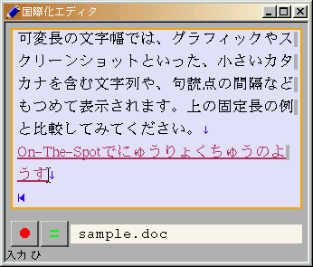
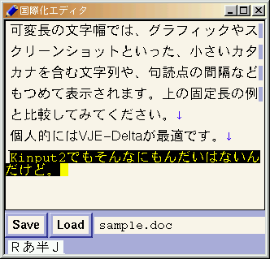
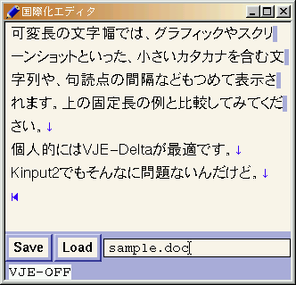
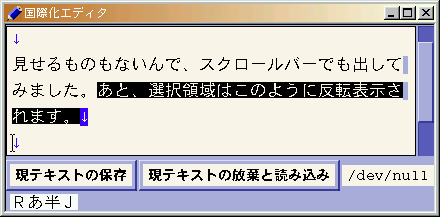
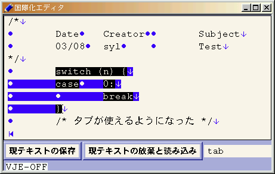
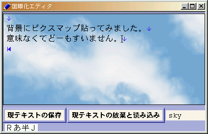

開発中のGUI部品である国際化TextArea, TextLine, Buttonと垂直方向Scrollbarオブジェクト、およびレイアウトマネージャ、コントロールマネージャを利用した、実装例としてのエディタです。
X11R6の環境下で動作する本エディタの特徴は以下の通りです。
ウィンドウマネージャにはqvwmを使用している。

フォントにはリコーのTrueTypeWorld平成角ゴシックW3とアドビのHelveticaを使用（16pt）。IMサーバはVJE-Delta（フォントを変更するようにパッチを当てたもの）。

フォントにはリコーのTrueTypeWorld平成角ゴシックW3とアドビのHelveticaを使用（16pt）。


フォントにはリコーのTrueTypeWorld平成角ゴシックW3とアドビのCourierを使用（16pt）。


最新版はeditor-20010625.tar.gzです。動作確認したプラットフォームはFreeBSD 2.2.8だけですが、Solarisでも動くと思います。
tar ballを展開後、環境に合うようにImakefileを編集してください。アイコンウィンドウを用いる場合は、shape extentionとXpmライブラリを使用するので、Imakefileで次のように定義します。
#define ShapeIcon
あとはxmkmf -a ; makeで完了するはずです。
次のように起動します。
% setenv LANG ロケール名% setenv XMODIFIERS @im=IMサーバ名% xrdb -merge リソースファイル% editor ファイル名FreeBSDでは、実際には次のようになります。
% setenv LANG ja_JP.EUC % setenv XMODIFIERS @im=vje % xrdb -merge Editor.ad % editor sample.doc
起動後、編集領域をクリックすれば、編集が可能になります。左から1番目のボタンをクリックすると編集テキストを指定のファイル名で保存します。左から2番目のボタンをクリックすると編集テキストを放棄し、指定のファイル名の内容を読み込みます。ウィンドウマネージャから「ウィンドウを閉じる」を選択すると終了します。
Kinput2がバージョン3以降でOn-The-Spotをサポートしたのをきっかけに、この国際化エディタもOn-The-Spot入力をサポートすることにしました。ただし、今のところ次のような制限があります。
TextArea/TextLineで利用可能。前編集文字列がある場合は、通常のキーイベントを無視するため、カーソルの移動などの操作はXIMサーバ側の操作に依存する。
前編集文字列が存在する状態でフォーカスが移動（スクロールバーの操作、画面のリサイズなどでポインタがグラブされる場合も含む）すると、その前編集文字列はキャンセルされる。
前編集文字列が存在する状態では、マウスによるカーソル移動はできない。
前編集文字列の前景色はリソース
editor.edit.text.preeditededitor.filename.text.preeditedで指定します。
On-The-Spot入力を利用するには、リソースeditor.ximStyleに
PreeditCallbacks, StatusNonePreeditCallbacks, StatusNothingPreeditCallbacks, StatusAreaのいずれかを指定します。状態表示領域はOn-The-Spotに対応していないので、
PreeditCallbacks, StatusCallbacksは利用できません。
リソース一覧を用意しておきました。
ボタンのラベル文字列を設定しないと実用的ではないでしょう。それ以外はデフォルトのまま使用しても問題ないでしょう。一応サンプルのリソースファイルを用意しておきました。
以下の課題がある。